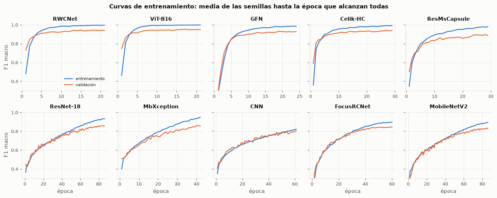
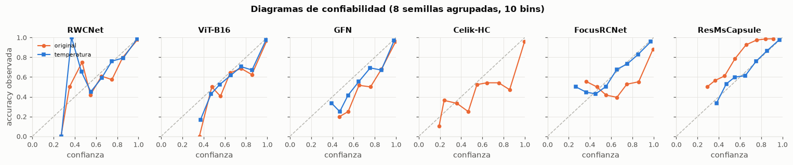
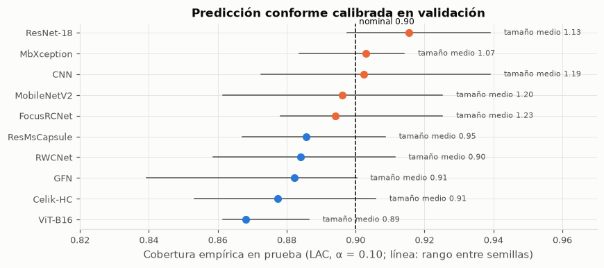

14. Bondad de ajuste, sobreajuste, calibración e incertidumbre#
En este capítulo aplicamos a los diez modelos las pruebas de bondad de ajuste (tabla A) y de sobreajuste (tabla B) de la ruta metodológica:
bondad de ajuste: ¿los modelos capturan la relación entre la imagen y la clase, mejor que el azar y que el baseline trivial?;
sobreajuste: ¿la brecha entre entrenamiento y validación es aceptable?, ¿el desempeño de validación es consistente con el de prueba?;
calibración e incertidumbre: ¿las probabilidades son confiables y la incertidumbre señala los errores?
Cerramos con el criterio de adecuación de la ruta metodológica. Salvo las métricas de calibración preregistradas (ECE, NLL y Brier antes y después del escalado de temperatura) y MC Dropout, los análisis de este capítulo son exploratorios.
14.1 Bondad de ajuste (tabla A)#
Prueba |
Hipótesis nula |
Aplicación |
|---|---|---|
Binomial exacta frente al baseline trivial |
La accuracy no supera la proporción de la clase mayoritaria de prueba (0.235) |
Unilateral, en cada corrida |
Permutación de etiquetas |
Las predicciones no se asocian con la clase |
Permutación condicional: 2000 permutaciones de las etiquetas de prueba con las predicciones fijas; \(p = (1 + \#\{F_b \geq F_{\text{obs}}\})/(B+1)\). Complementa la permutación del pipeline completo, aplicada al baseline clásico (sección 9.4) |
AUC frente a 0.5 |
La AUC macro uno contra resto es 0.5 |
IC 95 % bootstrap por grupo (500 remuestreos) |
MCC frente a 0 |
El acuerdo es el del azar |
IC 95 % bootstrap por grupo |
Pendiente e intercepto de calibración |
Pendiente 1 e intercepto 0 en la regresión logística del acierto sobre el logit de la confianza |
Prueba de razón de verosimilitud conjunta (2 gl) |
Z de Spiegelhalter (1986) |
El Brier de la confianza es compatible con probabilidades calibradas |
\(Z\) normal estándar bajo \(H_0\) |
En la clasificación multiclase, la pendiente y el Z se calculan sobre la probabilidad de la clase predicha (top-label).
b = pd.read_csv(COMP / "bondad_ajuste.csv")
ag = b.groupby("model", sort=False).agg(
p_binomial_max=("p_binomial", "max"), p_permutacion_max=("p_permutacion", "max"), F1_permutado=("f1_perm_media", "mean"),
AUC=("auc_macro", "mean"), AUC_IC_inf_min=("auc_ic_lo", "min"), MCC=("mcc", "mean"), MCC_IC_inf_min=("mcc_ic_lo", "min"),
pendiente=("calib_pendiente", "mean"), intercepto=("calib_intercepto", "mean"),
semillas_calib_rechazada=("calib_p_lr", lambda x: int((x < 0.05).sum())),
Z_Spiegelhalter=("spiegelhalter_z", "mean"), semillas_Z_rechazada=("spiegelhalter_p", lambda x: int((x < 0.05).sum())))
display(ag.round(4))
| p_binomial_max | p_permutacion_max | F1_permutado | AUC | AUC_IC_inf_min | MCC | MCC_IC_inf_min | pendiente | intercepto | semillas_calib_rechazada | Z_Spiegelhalter | semillas_Z_rechazada | |
|---|---|---|---|---|---|---|---|---|---|---|---|---|
| model | ||||||||||||
| Celik-HC | 0.0 | 0.0005 | 0.1665 | 0.9863 | 0.9654 | 0.9096 | 0.8458 | 0.6905 | -1.0409 | 8 | 11.8828 | 8 |
| MbXception | 0.0 | 0.0005 | 0.1658 | 0.9807 | 0.9647 | 0.8466 | 0.7698 | 0.6340 | -0.1134 | 7 | 5.3800 | 8 |
| ViT-B16 | 0.0 | 0.0005 | 0.1667 | 0.9953 | 0.9882 | 0.9309 | 0.8820 | 0.6626 | -0.5994 | 8 | 8.1212 | 8 |
| GFN | 0.0 | 0.0005 | 0.1665 | 0.9924 | 0.9825 | 0.9205 | 0.8720 | 0.6540 | -0.9762 | 8 | 11.7198 | 8 |
| FocusRCNet | 0.0 | 0.0005 | 0.1662 | 0.9679 | 0.9473 | 0.7954 | 0.7292 | 0.2878 | -0.3875 | 8 | 22.7426 | 8 |
| ResMsCapsule | 0.0 | 0.0005 | 0.1662 | 0.9829 | 0.9556 | 0.8918 | 0.8320 | 2.2024 | 0.9863 | 8 | -7.4453 | 8 |
| RWCNet | 0.0 | 0.0005 | 0.1665 | 0.9966 | 0.9902 | 0.9413 | 0.8911 | 0.7486 | -0.1366 | 5 | 3.2056 | 5 |
| CNN | 0.0 | 0.0005 | 0.1654 | 0.9735 | 0.9458 | 0.8174 | 0.7072 | 0.7964 | 0.4798 | 5 | -0.3474 | 0 |
| MobileNetV2 | 0.0 | 0.0005 | 0.1666 | 0.9682 | 0.9414 | 0.7895 | 0.6890 | 0.6774 | -0.2154 | 8 | 5.3352 | 8 |
| ResNet-18 | 0.0 | 0.0005 | 0.1665 | 0.9787 | 0.9579 | 0.8424 | 0.7557 | 0.6774 | -0.0068 | 8 | 3.6400 | 8 |
Los diez modelos capturan la relación entre imagen y clase. En las 80 corridas, la binomial y la permutación rechazan \(H_0\) con el menor \(p\) posible (\(p \leq 0.0005\)). El F1 con etiquetas permutadas es cercano a 0.16, el valor del azar. El límite inferior del IC 95 % de la AUC (≥ 0.94) y del MCC (≥ 0.69) queda lejos de 0.5 y de 0 en todas las semillas.
Las probabilidades sin recalibrar no están calibradas. La pendiente de calibración es menor que 1 en nueve modelos (entre 0.29 y 0.80), el patrón típico de sobreconfianza de las redes profundas. La prueba conjunta rechaza en casi todas las semillas. Hay dos casos extremos:
FocusRCNet: pendiente de 0.29. La destilación con temperatura 4 sobresuaviza la salida, de modo que la confianza separa mal los aciertos de los errores.
ResMsCapsule: pendiente de 2.2, un modelo subconfiado, porque las longitudes de las cápsulas no son probabilidades.
Solo la CNN del capítulo 4 no muestra descalibración según el Z de Spiegelhalter.
14.2 Sobreajuste (tabla B)#
Brecha entre entrenamiento y validación con margen. En cada corrida calculamos \(g = F1_{\text{train}} - F1_{\text{val}}\) en la mejor época. Contrastamos la hipótesis de no inferioridad \(H_0: g \geq \delta_g\) frente a \(H_1: g < \delta_g\) con Wilcoxon unilateral y t unilateral sobre las 8 semillas, con Holm sobre los diez modelos. Fijamos \(\delta_g = 0.05\) en F1 macro, el valor de referencia para este margen, y el análisis es exploratorio.
br = pd.read_csv(COMP / "brecha_no_inferioridad.csv").set_index("model")
display(br[["brecha_media", "brecha_de", "p_wilcoxon_holm", "p_t_holm", "llega_tope_epocas"]].round(4))
| brecha_media | brecha_de | p_wilcoxon_holm | p_t_holm | llega_tope_epocas | |
|---|---|---|---|---|---|
| model | |||||
| Celik-HC | 0.0329 | 0.0074 | 0.0391 | 0.0013 | 1 |
| MbXception | 0.0785 | 0.0259 | 1.0000 | 1.0000 | 6 |
| ViT-B16 | 0.0311 | 0.0058 | 0.0391 | 0.0002 | 0 |
| GFN | 0.0345 | 0.0093 | 0.0469 | 0.0077 | 1 |
| FocusRCNet | 0.0351 | 0.0131 | 0.0586 | 0.0360 | 8 |
| ResMsCapsule | 0.0572 | 0.0176 | 1.0000 | 1.0000 | 2 |
| RWCNet | 0.0367 | 0.0042 | 0.0391 | 0.0002 | 0 |
| CNN | 0.0109 | 0.0235 | 0.0391 | 0.0077 | 6 |
| MobileNetV2 | 0.0394 | 0.0218 | 0.2188 | 0.4245 | 5 |
| ResNet-18 | 0.0650 | 0.0140 | 1.0000 | 1.0000 | 5 |
hist = {m: [load_pickle(run_dir(m, s) / "history.pkl") for s in SEEDS] for m in MODELS}
fig, axes = plt.subplots(2, 5, figsize=(13, 5.2), sharey=True)
for ax, m in zip(axes.ravel(), w_order := list(pd.read_csv(SUM / "f1_macro_por_semilla.csv")[MODELS].mean().sort_values(ascending=False).index)):
L = min(len(h["val_f1_macro"]) for h in hist[m])
tr = np.mean([h["train_f1_macro"][:L] for h in hist[m]], 0)
va = np.mean([h["val_f1_macro"][:L] for h in hist[m]], 0)
ax.plot(range(1, L + 1), tr, color=FG.SERIES[0], lw=1.6, label="entrenamiento")
ax.plot(range(1, L + 1), va, color=FG.SERIES[1], lw=1.6, label="validación")
ax.set_title(m, fontsize=9.5); ax.set_ylim(0.3, 1.01)
axes[0, 0].set_ylabel("F1 macro"); axes[1, 0].set_ylabel("F1 macro")
for ax in axes[1]: ax.set_xlabel("época")
axes[0, 0].legend(loc="lower right", fontsize=7.5)
fig.suptitle("Curvas de entrenamiento: media de las semillas hasta la época que alcanzan todas", fontsize=11, fontweight="bold")
plt.tight_layout(); plt.show()

Seis modelos tienen una brecha significativamente menor que \(\delta_g\) tras Holm: Celik-HC, ViT-B16, GFN, RWCNet y la CNN con las dos pruebas, y FocusRCNet con la t. Los demás quedan por encima o no se puede afirmar que estén por debajo:
ResNet-18: 0.065;
MbXception: 0.079;
ResMsCapsule: 0.057;
MobileNetV2: 0.039, pero con una dispersión que impide concluir.
Las curvas añaden un diagnóstico de subajuste. MbXception y FocusRCNet, entrenados desde cero, llegan al tope de 60 épocas en 6 y 8 de sus 8 semillas, con el F1 de validación todavía en aumento. Estos dos modelos son los candidatos naturales a un presupuesto de épocas mayor. Los modelos preentrenados alcanzan su mejor época entre la 20 y la 30 y se detienen por paciencia.
Validación frente a prueba. La diferencia \(F1_{\text{val}} - F1_{\text{test}}\) indica sobreajuste a la validación por la selección de época e hiperparámetros, o un cambio de distribución entre los dos conjuntos. Calculamos su IC 95 % remuestreando grupos de casi-duplicados de ambos conjuntos (2000 remuestreos) y promediando las 8 semillas.
vt = pd.read_csv(COMP / "validacion_vs_prueba.csv").set_index("model")
display(vt.round(4))
cv = pd.read_csv(COMP / "sensibilidad_semilla.csv").set_index("model")
display(cv.round(4).T)
| val_menos_test | ic_lo | ic_hi | significativa | |
|---|---|---|---|---|
| model | ||||
| Celik-HC | 0.0267 | -0.0062 | 0.0581 | False |
| MbXception | 0.0197 | -0.0294 | 0.0673 | False |
| ViT-B16 | 0.0302 | 0.0034 | 0.0566 | True |
| GFN | 0.0331 | 0.0041 | 0.0616 | True |
| FocusRCNet | 0.0436 | -0.0085 | 0.0910 | False |
| ResMsCapsule | 0.0240 | -0.0142 | 0.0615 | False |
| RWCNet | 0.0122 | -0.0156 | 0.0385 | False |
| CNN | 0.0245 | -0.0297 | 0.0745 | False |
| MobileNetV2 | 0.0385 | -0.0131 | 0.0892 | False |
| ResNet-18 | 0.0104 | -0.0416 | 0.0577 | False |
| model | Celik-HC | MbXception | ViT-B16 | GFN | FocusRCNet | ResMsCapsule | RWCNet | CNN | MobileNetV2 | ResNet-18 |
|---|---|---|---|---|---|---|---|---|---|---|
| media | 0.9139 | 0.8613 | 0.9378 | 0.9210 | 0.8112 | 0.8990 | 0.9450 | 0.8261 | 0.8095 | 0.8628 |
| de | 0.0134 | 0.0137 | 0.0138 | 0.0147 | 0.0154 | 0.0153 | 0.0101 | 0.0215 | 0.0250 | 0.0216 |
| cv_pct | 1.4636 | 1.5939 | 1.4668 | 1.6008 | 1.8952 | 1.7069 | 1.0660 | 2.6057 | 3.0885 | 2.4990 |
El F1 de validación supera al de prueba en los diez modelos, entre 0.010 y 0.044. El IC excluye el cero solo en ViT-B16 (0.030) y GFN (0.033). La auditoría de la sección 9.3 detectó una diferencia leve de distribución entre validación y prueba (AUC adversarial de 0.56), así que parte de esta brecha no se debe a la selección. Todos los modelos se seleccionaron sobre el mismo conjunto de validación, por lo que el sesgo afecta por igual a la comparación.
Sensibilidad a la semilla. El coeficiente de variación entre semillas va de 1.1 % (RWCNet) a 3.1 % (MobileNetV2). Es menor en los modelos preentrenados, que parten de los mismos pesos y difieren solo en la cabeza, el orden de los lotes y el aumento.
14.3 Calibración#
Reportamos el ECE con 15 bins de igual ancho, que es el preregistrado. Como el ECE depende de la discretización, añadimos un ECE adaptativo (15 bins de igual masa) y un ECE por clase. El escalado de temperatura (Guo et al., 2017) divide los logits por un escalar \(T\) ajustado en validación, \(p = \mathrm{softmax}(z/T)\). Lo elegimos porque Guo et al. muestran que, con un solo parámetro, corrige la sobreconfianza de las redes profundas modernas sin cambiar la clase predicha, y por tanto sin alterar el F1; no se aplica a Celik-HC, cuyas probabilidades vienen de XGBoost, ni a los modelos del capítulo 4.
ca = pd.read_csv(COMP / "calibracion_ampliada.csv")
display(ca.groupby("model", sort=False)[["ece15", "ece_adaptativo15", "ece_por_clase", "nll", "brier", "temperatura", "ece15_ts",
"ece_adaptativo15_ts"]].mean().round(4))
| ece15 | ece_adaptativo15 | ece_por_clase | nll | brier | temperatura | ece15_ts | ece_adaptativo15_ts | |
|---|---|---|---|---|---|---|---|---|
| model | ||||||||
| Celik-HC | 0.0563 | 0.0494 | 0.0215 | 0.3627 | 0.1250 | NaN | NaN | NaN |
| MbXception | 0.0571 | 0.0517 | 0.0313 | 0.4334 | 0.1908 | 1.5288 | 0.0346 | 0.0380 |
| ViT-B16 | 0.0416 | 0.0354 | 0.0179 | 0.2380 | 0.0936 | 1.3786 | 0.0302 | 0.0303 |
| GFN | 0.0510 | 0.0485 | 0.0204 | 0.3145 | 0.1100 | 1.5305 | 0.0329 | 0.0388 |
| FocusRCNet | 0.1317 | 0.1262 | 0.0508 | 1.0390 | 0.2907 | 3.1550 | 0.0430 | 0.0432 |
| ResMsCapsule | 0.1934 | 0.1911 | 0.0709 | 0.4505 | 0.1887 | 0.5143 | 0.0283 | 0.0327 |
| RWCNet | 0.0273 | 0.0213 | 0.0161 | 0.1754 | 0.0779 | 1.2763 | 0.0202 | 0.0172 |
| CNN | 0.0602 | 0.0612 | 0.0378 | 0.4850 | 0.2351 | NaN | NaN | NaN |
| MobileNetV2 | 0.0705 | 0.0656 | 0.0358 | 0.5500 | 0.2522 | NaN | NaN | NaN |
| ResNet-18 | 0.0510 | 0.0445 | 0.0285 | 0.4289 | 0.1931 | NaN | NaN | NaN |
def reliab(P, y, bins=10):
conf = P.max(1); acc = (P.argmax(1) == y)
e = np.linspace(0, 1, bins + 1); idx = np.clip(np.digitize(conf, e) - 1, 0, bins - 1)
return np.array([[conf[idx == b].mean(), acc[idx == b].mean(), (idx == b).sum()] if (idx == b).any() else [np.nan] * 3 for b in range(bins)])
sel = ["RWCNet", "ViT-B16", "GFN", "Celik-HC", "FocusRCNet", "ResMsCapsule"]
fig, axes = plt.subplots(1, 6, figsize=(14, 2.9), sharey=True)
for ax, m in zip(axes, sel):
Ps, Ys, Pts = [], [], []
for s in SEEDS:
d = aligned(m, s); Ps.append(d["probs"]); Ys.append(d["y_true"])
c = load_pickle(run_dir(m, s) / "calibration.pkl")
if c.get("aplicable") and "probs_escaladas" in c:
d0 = load_pickle(run_dir(m, s) / "test_predictions.pkl"); o = np.argsort([relpath(f) for f in d0["filepaths"]])
Pts.append(c["probs_escaladas"][o])
r = reliab(np.concatenate(Ps), np.concatenate(Ys))
ax.plot([0, 1], [0, 1], color=FG.NEUTRAL, lw=1, ls="--")
ax.plot(r[:, 0], r[:, 1], "o-", color=FG.SERIES[1], ms=4, lw=1.4, label="original")
if Pts:
rt = reliab(np.concatenate(Pts), np.concatenate(Ys))
ax.plot(rt[:, 0], rt[:, 1], "s-", color=FG.SERIES[0], ms=4, lw=1.4, label="temperatura")
ax.set_title(m, fontsize=9.5); ax.set_xlabel("confianza"); ax.set_xlim(0, 1); ax.set_ylim(0, 1)
axes[0].set_ylabel("accuracy observada"); axes[0].legend(loc="upper left", fontsize=7.5)
fig.suptitle("Diagramas de confiabilidad (8 semillas agrupadas, 10 bins)", fontsize=11, fontweight="bold")
plt.tight_layout(); plt.show()

RWCNet es el modelo mejor calibrado: tiene el menor ECE fijo (0.027), adaptativo (0.021) y por clase (0.016), y la menor NLL (0.175). El escalado de temperatura reduce el ECE de todos los modelos a los que se aplica, hasta 0.020–0.043, y corrige los dos extremos:
FocusRCNet: su ECE baja de 0.132 a 0.043 con \(T = 3.2\).
ResMsCapsule: baja de 0.193 a 0.028 con \(T = 0.51\), porque una temperatura menor que 1 agudiza una salida subconfiada.
El ECE fijo y el adaptativo ordenan los modelos de la misma forma, por lo que la conclusión no depende de la discretización.
14.4 Incertidumbre predictiva#
MC Dropout (preregistrado). Gal y Ghahramani (2016) muestran que mantener el dropout activo en inferencia aproxima la distribución predictiva de un modelo bayesiano, sin reentrenar. Con 20 pasadas estocásticas por imagen, descomponemos la entropía predictiva en una parte aleatoria y otra epistémica, la información mutua \(I = H[\bar p] - \overline{H[p]}\). Una incertidumbre útil debe ser mayor en los errores que en los aciertos.
mcd = pd.read_csv(SUM / "incertidumbre_mc_dropout.csv")
u = mcd.groupby("model", sort=False)[["mi_media_aciertos", "mi_media_errores", "f1_macro_determinista", "mc_f1_macro", "mc_ece"]].mean()
u["razón errores/aciertos"] = u.mi_media_errores / u.mi_media_aciertos
display(u.round(4))
| mi_media_aciertos | mi_media_errores | f1_macro_determinista | mc_f1_macro | mc_ece | razón errores/aciertos | |
|---|---|---|---|---|---|---|
| model | ||||||
| Celik-HC | 0.0075 | 0.0581 | 0.9139 | 0.9177 | 0.0539 | 7.7012 |
| MbXception | 0.0033 | 0.0125 | 0.8613 | 0.8602 | 0.0573 | 3.8067 |
| ViT-B16 | 0.0012 | 0.0107 | 0.9378 | 0.9391 | 0.0418 | 9.0244 |
| GFN | 0.0010 | 0.0113 | 0.9210 | 0.9217 | 0.0488 | 11.1593 |
| FocusRCNet | 0.0063 | 0.0281 | 0.8112 | 0.8105 | 0.1276 | 4.4327 |
| ResMsCapsule | 0.0131 | 0.0199 | 0.8990 | 0.9005 | 0.1960 | 1.5172 |
| RWCNet | 0.0008 | 0.0068 | 0.9450 | 0.9443 | 0.0290 | 8.1021 |
En los siete modelos con capas de dropout, la información mutua es mayor en los errores que en los aciertos. La razón va de 1.5 (ResMsCapsule) a 11 (GFN) y es de 8 a 9 en ViT-B16 y RWCNet. Promediar las 20 pasadas no cambia el F1 de forma apreciable (≤ 0.004). Los modelos del capítulo 4 no guardaron MC Dropout.
Predicción conforme (exploratoria). Para los diez modelos aplicamos predicción conforme dividida (Angelopoulos y Bates, 2023). Su interés es que garantiza una cobertura de al menos \(1 - \alpha\) sin supuestos sobre el modelo, solo con que los datos de calibración y de prueba sean intercambiables. Usamos dos puntajes:
LAC (Sadinle et al., 2019): \(1 - \hat p_y\), que produce los conjuntos más pequeños con la cobertura pedida;
APS (Romano et al., 2020): masa acumulada hasta la clase verdadera, sin aleatorización, que adapta el tamaño del conjunto a la dificultad de cada imagen.
Calibramos el umbral con el conjunto de validación de la misma corrida, disjunto del de entrenamiento y del de prueba, y medimos en prueba la cobertura empírica y el tamaño medio del conjunto para \(\alpha = 0.10\) y \(0.05\).
cf = pd.read_csv(COMP / "conforme.csv")
t = cf.groupby(["model", "alpha"], sort=False)[["cobertura_lac", "tam_medio_lac", "vacios_lac", "cobertura_aps", "tam_medio_aps"]].mean().unstack()
display(t.round(3))
cc = pd.read_csv(COMP / "conforme_por_clase.csv")
display(cc[cc.model.isin(["RWCNet", "ViT-B16", "GFN"])].groupby(["model", "clase"]).cobertura_lac.mean().unstack().round(3))
| cobertura_lac | tam_medio_lac | vacios_lac | cobertura_aps | tam_medio_aps | ||||||
|---|---|---|---|---|---|---|---|---|---|---|
| alpha | 0.10 | 0.05 | 0.10 | 0.05 | 0.10 | 0.05 | 0.10 | 0.05 | 0.10 | 0.05 |
| model | ||||||||||
| Celik-HC | 0.877 | 0.935 | 0.907 | 1.030 | 0.093 | 0.007 | 0.992 | 0.992 | 2.817 | 2.866 |
| MbXception | 0.903 | 0.958 | 1.072 | 1.406 | 0.001 | 0.000 | 0.997 | 0.998 | 3.926 | 4.596 |
| ViT-B16 | 0.868 | 0.924 | 0.886 | 0.962 | 0.114 | 0.038 | 0.998 | 0.998 | 3.089 | 3.322 |
| GFN | 0.882 | 0.934 | 0.913 | 0.998 | 0.087 | 0.019 | 0.996 | 0.997 | 2.904 | 3.097 |
| FocusRCNet | 0.894 | 0.949 | 1.230 | 1.620 | 0.000 | 0.000 | 0.997 | 0.999 | 4.360 | 4.896 |
| ResMsCapsule | 0.886 | 0.954 | 0.954 | 1.165 | 0.052 | 0.001 | 0.984 | 0.988 | 2.539 | 2.887 |
| RWCNet | 0.884 | 0.944 | 0.898 | 0.988 | 0.102 | 0.014 | 1.000 | 1.000 | 4.468 | 4.958 |
| CNN | 0.902 | 0.959 | 1.189 | 1.698 | 0.001 | 0.000 | 0.997 | 0.999 | 4.275 | 4.796 |
| MobileNetV2 | 0.896 | 0.948 | 1.202 | 1.560 | 0.000 | 0.000 | 0.997 | 0.999 | 4.029 | 4.559 |
| ResNet-18 | 0.916 | 0.961 | 1.130 | 1.463 | 0.000 | 0.000 | 0.997 | 0.999 | 3.931 | 4.548 |
| clase | cardboard | glass | metal | paper | plastic | trash |
|---|---|---|---|---|---|---|
| model | ||||||
| GFN | 0.922 | 0.877 | 0.927 | 0.925 | 0.810 | 0.717 |
| RWCNet | 0.901 | 0.882 | 0.920 | 0.929 | 0.810 | 0.796 |
| ViT-B16 | 0.931 | 0.861 | 0.866 | 0.924 | 0.808 | 0.678 |
fig, ax = plt.subplots(figsize=(8, 3.6))
sub = cf[cf.alpha == 0.10]
orden = sub.groupby("model").cobertura_lac.mean().sort_values().index
for i, m in enumerate(orden):
x = sub[sub.model == m].cobertura_lac
ax.plot([x.min(), x.max()], [i, i], color=FG.INK2, lw=1)
ax.scatter(x.mean(), i, color=FG.color_regimen(m), s=40, zorder=3)
ax.text(x.max() + 0.004, i, f"tamaño medio {sub[sub.model == m].tam_medio_lac.mean():.2f}", va="center", fontsize=7.5, color=FG.INK2)
ax.axvline(0.90, color=FG.INK, lw=1, ls="--"); ax.text(0.901, len(orden) - 0.6, "nominal 0.90", fontsize=8)
ax.set_yticks(range(len(orden)), orden); ax.set_xlim(0.82, 0.97)
ax.set_xlabel("Cobertura empírica en prueba (LAC, α = 0.10; línea: rango entre semillas)")
ax.set_title("Predicción conforme calibrada en validación")
plt.tight_layout(); plt.show()

Con LAC y \(\alpha = 0.10\), la cobertura media va de 0.868 (ViT-B16) a 0.916 (ResNet-18), alrededor del nominal de 0.90. Los mejores modelos producen conjuntos de 0.89 a 0.91 clases en promedio, es decir, casi siempre una sola clase y a veces el conjunto vacío. Los modelos más débiles necesitan 1.1 a 1.2 clases.
Los modelos preentrenados quedan algo por debajo del nominal, y lo atribuimos a dos causas. La garantía de la predicción conforme exige que validación y prueba sean intercambiables, y la sección 9.3 encontró una diferencia leve entre ambas. Además, estos modelos tienen el F1 de validación más optimista (sección 14.2).
APS, sin aleatorización, sobrecubre (≥ 0.98) con conjuntos de 2.5 a 5 clases, por lo que no es útil aquí. La cobertura por clase muestra que el déficit se concentra en trash (0.68 a 0.80) y plastic (0.81), las clases más difíciles (capítulo 15).
14.5 Criterio de adecuación#
Un modelo es adecuado si cumple a la vez las cuatro condiciones:
(i) supera al baseline trivial con \(p\) ajustado < 0.05 y por más de \(\delta\);
(ii) su brecha entre entrenamiento y validación es menor que \(\delta_g\) con evidencia estadística;
(iii) sus probabilidades están calibradas;
(iv) su F1 de prueba es consistente con el de validación.
Para (iii) usamos el ECE tras el escalado de temperatura con un umbral de 0.05, fijado aquí y no en el preregistro. Para (iv), el IC de la diferencia entre validación y prueba debe incluir el cero.
crit = pd.DataFrame(index=MODELS)
crit["(i) supera al trivial"] = True
crit["(ii) brecha < δg (Holm)"] = [(br.loc[m, "p_t_holm"] < 0.05) for m in MODELS]
ece_ts = ca.groupby("model").ece15_ts.mean()
crit["(iii) calibrado (ECE tras temperatura < 0.05)"] = [bool(ece_ts.get(m) < 0.05) if not np.isnan(ece_ts.get(m, np.nan)) else
("sin recalibrar: " + f"{ca[ca.model == m].ece15.mean():.3f}") for m in MODELS]
crit["(iv) val ≈ prueba"] = [not bool(vt.loc[m, "significativa"]) for m in MODELS]
display(crit)
| (i) supera al trivial | (ii) brecha < δg (Holm) | (iii) calibrado (ECE tras temperatura < 0.05) | (iv) val ≈ prueba | |
|---|---|---|---|---|
| Celik-HC | True | True | sin recalibrar: 0.056 | True |
| MbXception | True | False | True | True |
| ViT-B16 | True | True | True | False |
| GFN | True | True | True | False |
| FocusRCNet | True | True | True | True |
| ResMsCapsule | True | False | True | True |
| RWCNet | True | True | True | True |
| CNN | True | True | sin recalibrar: 0.060 | True |
| MobileNetV2 | True | False | sin recalibrar: 0.070 | True |
| ResNet-18 | True | False | sin recalibrar: 0.051 | True |
Dos modelos cumplen las cuatro condiciones, y solo uno de ellos es competitivo:
RWCNet cumple las cuatro condiciones, con la menor diferencia entre validación y prueba del benchmark (0.012, IC [−0.016, 0.039]).
FocusRCNet también las cumple formalmente, aunque su brecha solo es menor que \(\delta_g\) con la t (no con Wilcoxon). Es el modelo con menor F1 del grupo y llega al tope de épocas en todas sus semillas: es adecuado en el sentido de la sección 7.2, pero no competitivo.
ViT-B16 y GFN cumplen (i) a (iii) y fallan (iv) por un sesgo de validación pequeño pero significativo.
Celik-HC cumple (i), (ii) y (iv), pero no se puede recalibrar con temperatura y su ECE original es 0.056.
ResMsCapsule cumple (i), (iii) y (iv), pero su brecha entre entrenamiento y validación (0.057) supera \(\delta_g\).
Modelos base y MbXception: MbXception, MobileNetV2 y ResNet-18 fallan (ii). La CNN cumple (i), (ii) y (iv), pero sus probabilidades sin recalibrar (ECE de 0.060) no cumplen (iii).